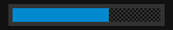

0
played
0
total
| Played | Favorite | Title | Developer | Publisher | Genre | Year |
|---|

Mega DriveThe LifeBar of the games that shaped your life
| Played | Favorite | Title | Developer | Publisher | Genre | Year |
|---|